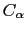

Next: Tube
Up: Rendering methods
Previous: Polyhedra
Contents
Index
Trace
This representation applies much of the procedure used to construct the
`Tube'. In the end, it
connects the alpha-carbon atoms of successive residues by cylindrical
segments with adjustable width. In the case of nucleic acids, it is the P
backbone atoms which are connected. As always, the segment pieces are
colored according to the atom they are associated with. If the cylinder
radius is made 0.00, then the cylinder segments are replaced with lines.
Note: the Trace option is useful for people doing threading or protein
folding work who only look at the 
coordinates and residue
names, for then they don't have to build the sidechains necessary to
see their structure. Also, people working on polymers can fake their
structure by naming everything ``CA.'' in the PDB file and then using
Trace.
vmd@ks.uiuc.edu